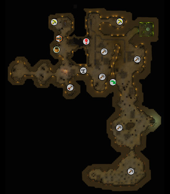
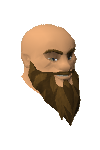
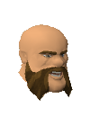
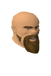

")
The Dwarven Mine
Introduction | Location | Points of Interest
Personalities | Quests | Dangers in the Dark | Miscellaneous
Personalities | Quests | Dangers in the Dark | Miscellaneous
Introduction

Be careful not to get lost in this subterranean labyrinth; there are plenty of creatures in here that are waiting for the chance to catch an unsuspecting adventurer. The mine is populated by dwarf miners that will put up quite a fight if you decide to attack them. The mine is also home to overgrown scorpions that skitter about amongst the mining rocks.
Location

Points of Interest

In addition to lots and lots of lovely mining rocks, the Dwarven Mine is home to a number of traders that can provide you with essential tools or brutal weapons.
Once you have smelted the ores that you have gathered, you can take them to the Smithing anvil that can be found near the centre of the mine. Simply bring a hammer and your bars and you're ready to go.
Advanced miners can access the Mining Guild. If you have a Mining level of 60 or above, head down to the most southern part of the mine and enter the guild. The guild gives you access to a host of coal and mithril rocks, with the added bonus of scorpion-free mining. The red dot on the map shows the location of the Mining Guild door, while the green, yellow and blue dots mark the main entrances to the mine itself.
A series of caverns has recently been discovered towards the northern end of the mine - there is a rope climb down to it near to the mine cart tracks. Running ice water from the melting peaks of Ice Mountain has opened up these caverns, which have been closed off for so long that a strange species of living rocks has evolved down there. The caverns offer excellent opportunities for experienced miners (and fishers). Be warned, however, that the living rocks are tough, aggresive and not fond of visitors from above.
Personalities
![[image]](../../img/main/kbase/npc/area_guides/chathead/nurmof1.gif) Nurmof is a purveyor of high quality pickaxes. He can sell you a shiny new pickaxe, from bronze up to rune, and he will also buy any that you no longer require. Nurmof can also repair broken pickaxes, for a fee.
|

Drogo runs the Dwarven Mine's Mining Emporium. He does a great trade in ores and metal bars, but make sure you treat him with respect. Drogo doesn't take too kindly to anyone calling him 'shorty'.
|
|
| Nurmof can be found in the north-west of the mine,north of the general store dwarf. | Drogo can be found in the north of the mine, in the cave to the east of the Ice Mountain entrance. |
![[image]](../../img/main/kbase/npc/area_guides/chathead/hammerspike_stoutbeard1.gif) You don't want to get on the wrong side of Hammerspike and his gang members. Hammerspike is a ruthless gangster, and has terrible manners.
|

Boot received his name due to a childhood habit of sleeping in a large item of footwear. Unsurprisingly for a dwarf, he knows a lot about gold.
|
|
| Hammerspike can be found in the far west of the mine. | Boot can be found in the west of the mine, in a cave to the west of Hura's crossbow shop. |
|

A master crossbow craftsman, Hura is a useful source of knowledge for those who are looking to produce their own crossbow and ammunition. Hura can also sell you some crossbow components to start you on your way.
|
![[image]](../../img/main/kbase/npc/area_guides/chathead/cart_conductor1.gif) The Cart Conductor is an employee of Keldagrim Carts and he will happily sell you a cart ticket to Keldagrim.
|
|
| Hura can be found in the west of the mine, in a cave to the south-west of the smithing anvil. | The Cart Conductor can be found in the north-west of the mine, north of the general store. |
Quests
There are no quests to start in the Dwarven Mine.
Dangers in the Dark
![[image]](../../img/main/kbase/npc/area_guides/scorpion.gif) These over-sized hunters thrive in dark, damp spaces, making the Dwarven Mine an ideal habitat. Low-level players should treat these scorpions with caution. Be sure to bring a weapon with you when you mine.
|
![[image]](../../img/main/kbase/npc/area_guides/poison_scorpion.gif) King scorpions love nothing more than attacking unsuspecting miners as they attempt to gather precious ore. These super stingers are very aggressive, and guard the higher-level rocks.
|
|
| The scorpions' territory covers the area north of the Mining Guild, right up to the most northern coal rocks. | The king scorpions patrol the iron, mithril and adamantite rocks in the area north of the Mining Guild door; and the coal and tin rocks west of the Falador house stairs. |
Miscellaneous
- You can use the carts in Keldagrim to travel to the Dwarven Mine. Buy a ticket from a cart conductor in Keldagrim and select Ice Mountain as your destination.
- If you have an Agility level of 42, you can take advantage of the shortcut between the two main chambers of the Dwarven Mine.

More articles in
Dungeons
|
|